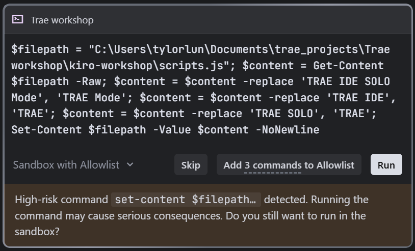
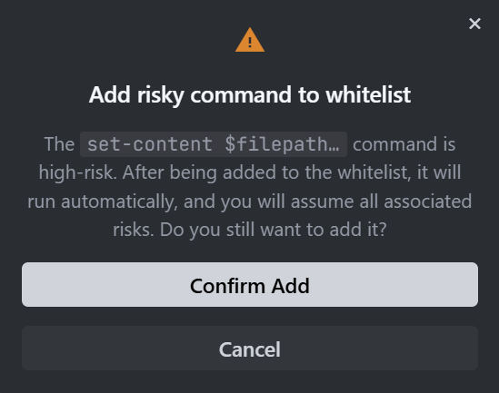
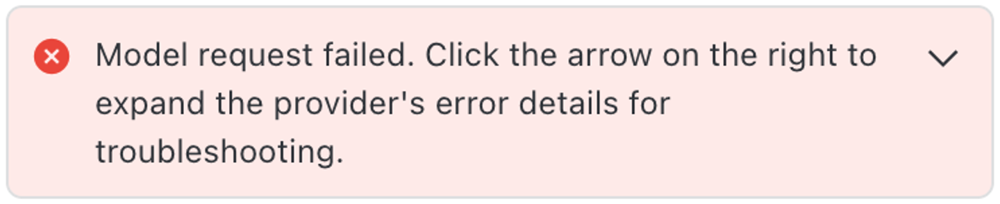
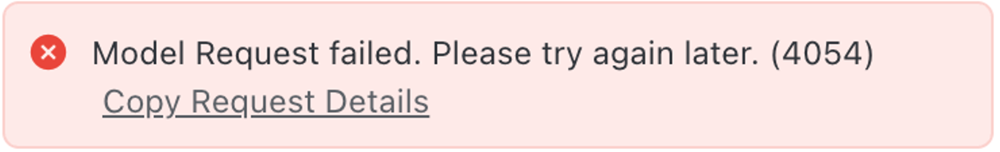

General Questions
Must I use AI coding agents for development?
No, Allowed tools and platforms such as OpenCode, Microsoft Copilot Studio can be used to develop, TRAE is recommended but not mandatory.
AI coding agent seems stuck. What should I do?
First, check the terminal for any pending input prompts. If that does not help, press Escape and restart the session.
A sample of a terminal waiting for user input
You may also be in a "thinking loop" — this tends to occur when the Context Window is approaching its limit.
AI Coding Agent is asking me to approve a high-risk command. Should I approve?
Yes, it is generally safe to approve. The AI Coding Agent operates within an isolated sandbox environment, so commands executed during the aiHackathon will not affect your host system.

However, exercise caution when using other coding agents outside this event, especially on company machines. Outside the sandbox, high-risk commands could lead to cyber-security issues.

The AI Coding Agent is showing "Model Request failed" warning, what should I do?
Occasional network instability may occur. Contestants are advised to keep trying to prompt the agent to continue or switch to other provided models. The service is likely to resume within a few minutes.


If the issue persists after a few minutes, please alert the on-site technical support.
What models are allowed to be used during the event?
Five models are designated and pre-installed in the AI coding agents for the aiHackathon:
- qwen3.6-plus (suggested model, supports text and image input)
- minimax-m2.7
- kimi-k2.6 (supports text and image input)
- glm-5.1
- deepseek-v4-flash
These models offer similar performance for coding and agentic tasks. Contestants are free to switch between them should they experience instability or slowdowns from any one model. Contestants are not permitted to use any other models for development in TRAE and OpenCode.
In TRAE, these models are accessible under the "Custom Models" section.
Do we need a PowerPoint for the presentation?
There is no fixed format. Focus on convincing the judges to award you a high score across the judging criteria. Use whatever medium best communicates your idea.
What is the presentation format?
Each team has 5 minutes for presentation followed by 3 minutes of Q&A from the judges. Teams will present one by one.
Presentations will be delivered from your own workstation, with a MacBook (the one with TRAE) projecting to the main LED wall on stage for the judges.
Technical Support
What should I do if I experience network issues during the hackathon?
If you experience constant or frequent network problems, voice it out to the technical support on-site so they can investigate the issue.
Where can I get help if I am stuck?
Technical support on-site will only address stability issues with the provided tools and resources. For project guidance, the agent in AI Coding Agent and this survival kit are your available resources. Use them to troubleshoot and advance your work.
Event Details
Is there a deadline for the development phase?
The deadline is 14:40 sharp.
What awards are available?
Total prizes worth HK$30,000:
- Gold Award :HK$10,000 for the winning team
- Silver Award :HK$8,000 for the winning team
- Bronze Award :HK$5,000 for the winning team
- Outstanding Innovation Award :HK$2,000 for the winning team
- My Favourite AI Solution Award (Audience Vote) :HK$2,000 for the winning team
- Excellent Strategic Solution Award :HK$1,000 for the winning team
- Excellent Administrative Solution Award :HK$1,000 for the winning team
- Excellent Learning & Teaching Solution Award :HK$1,000 for the winning team
All competing teams will receive certificates of attendance. Winners will receive certificates of merit and prizes.
What is the schedule for the competition day?
- 09:00 :Check-in
- 09:30 :Opening Remarks
- 09:35 :Briefing on Rules and Regulations
- 09:40 :Training Session
- 10:40 – 14:40 :Development Session (live streaming from 13:30 to 14:40)
- 14:40 :Team Presentations
- 16:40 :Recess and Judging Panel Deliberation
- 17:00 :Voting Deadline & Prize Presentation Ceremony
- 17:15 :Closing Remarks
What are the judging criteria?
The Judging Panel will evaluate projects based on the following criteria (except for the My Favourite AI Solution Award):
- Quality :Completeness of Functionality and User Experience
- Feasibility :Potential Technical Feasibility and Practical Implementation of the Prototype or Proof-of-Concept
- Innovation and Creativity :Brand-new Ideas or Creative Solutions
- Presentation :Clarity, Fluency and Effective Communication
Who are the judges?
The Judging Panel consists of:
- Dave CHEN :President, Hong Kong Computer Society
- Dr. John HUI :Principal cum Chief Digital Officer, Hong Kong Institute of Information Technology
- Dr. Daniel YAN :Academic Director of the Engineering Discipline, VTC cum Principal, Hong Kong Institute of Vocational Education (Tsing Yi)
- Kenny WOO :Director, Human Resources Office, VTC
- Keith YEUNG :Director, Information Technology Office, VTC
- Dennis WONG :Associate Principal, Hong Kong Institute of Vocational Education (Chai Wan)
After the Event
How do I back up my project to keep building after the aiHackathon?
You have two options:
Option 1: Push to Your Personal GitHub Repository
Use this sample prompt in TRAE's chat panel:
Push all files in this project directory to a new GitHub repository.
Steps:
1. Initialise a git repo if one doesn't already exist
2. Create a .gitignore file for this project type
3. Create a new repository on GitHub under my account
4. Commit all project files with a descriptive message
5. Push to the remote repository
6. Confirm the push was successful and provide the repository URLMake sure you are signed in to GitHub with your personal account before running the prompt.
Option 2: Upload to Your Personal OneDrive
Alternatively, upload your project directory to your personal OneDrive account. The OneDrive link is available on the Mac: Documents -> trae_projects.
Will the aiHackathon special environment for Microsoft Copilot Studio be available after the competition?
Yes, the special development environment at www.vtc.edu.hk/MSCopilotStudioForaiHackathon2026 will remain accessible for 1 month after the competition ends. You can continue refining your project during this period. After the 1-month window, the environment will be decommissioned.
How long can I keep the extra token for VTC GenAI Portal?
The extra token will be available for 6 months after the event.
Reach out to the organisers or check the home page for additional resources.